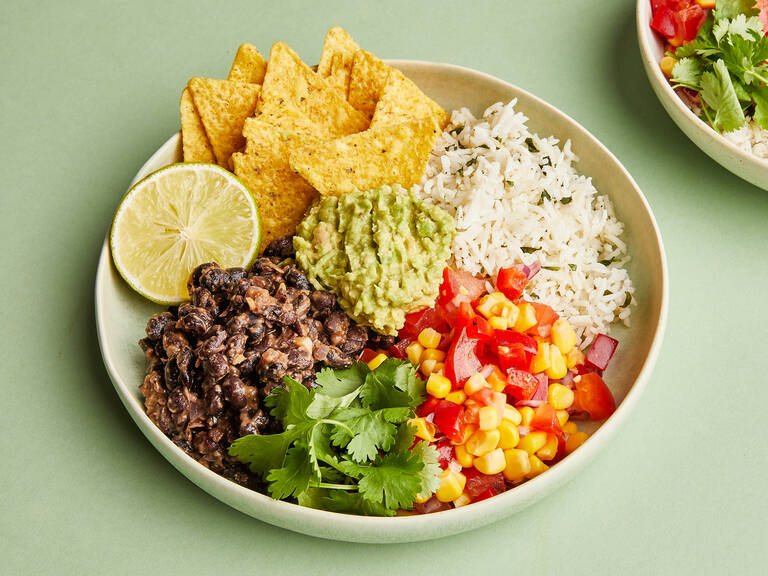

Veggie Burrito Bowl

Description
A burrito bowl is effectively a deconstructed burrito, and as such, it can have all sorts of components that you’d usually love to roll up into a tortilla. For our bright, filling (and veggie) bowl, we’ve opted for creamy black beans, a quick tomato, corn, and bell pepper salad, guacamole and crispy tortilla chips (in place of a tortilla wrap) served on limey cilantro rice. You can also add some spice and pan-fried ground beef, chicken, or crumbled tofu to your mix. On top, add some cilantro leaves, a dollop of sour cream and your favorite fiery salsa, if you like.
Ingredients
- basmati rice
- canned black beans
- water
- bay leaf
- red onion
- garlic
- olive oil
- ground cumin
- hot paprika powder
- avocado
- limes
- canned sweet corn
- tomato
- red bell pepper
- cilantro
- salt
- pepper
- hot sauce (for serving)
- sour cream dip (for serving)
- tortilla chip (for serving)
Steps
- Add the rice to a small pot, set over medium heat. Dry-toast it briefly (approx. 1 min) stirring constantly. Add salt, pepper, bay leaf, water, and a drizzle of olive oil to the rice. Bring to a boil on high heat, then put a lid on, reduce to low heat and let cook for approx. 12 min. Remove from heat and let the rice continue to steam with the lid on until serving.
- Drain the black beans and reserve the liquid. Finely dice red onion and garlic. Heat some olive oil over medium-high heat in a pot and add half of the onion, cook until translucent, then add the garlic and fry until fragrant. Add the beans, a few tablespoons of the bean liquid, cumin, hot smoked paprika, salt, and pepper. Let simmer until creamy, breaking some beans up with your cooking spoon, and adding more bean liquid as needed. Remove from heat and set aside.
- Make a quick guacamole by mashing the avocado with some lime juice to taste, then season with salt and pepper. Set aside. Drain corn, then dice tomato and deseeded red bell pepper. In a small bowl, mix together corn, tomatoes, bell pepper, and remaining red onion. Season to taste with olive oil, lime juice, salt, and pepper.
- Before serving, finely chop cilantro and stir it through the rice, fluffing with a fork, and adding lime juice to taste. Add rice to plates and spoon servings of the black beans, guacamole and salad around it. Top with some extra lime, coriander, a drizzle of hot sauce, a dollop of sour cream, and some crunchy tortilla chips. Enjoy!